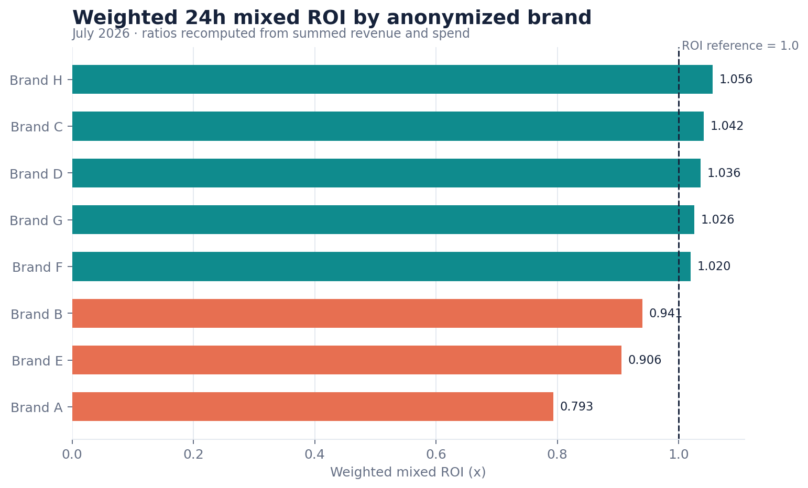
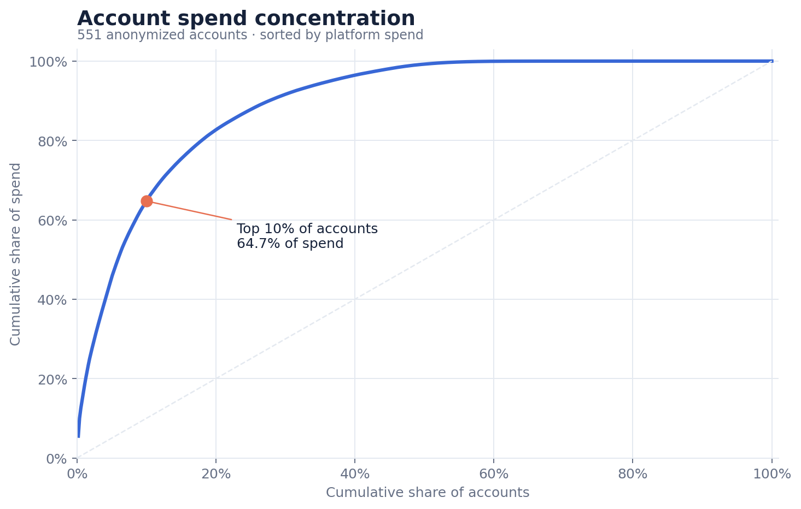
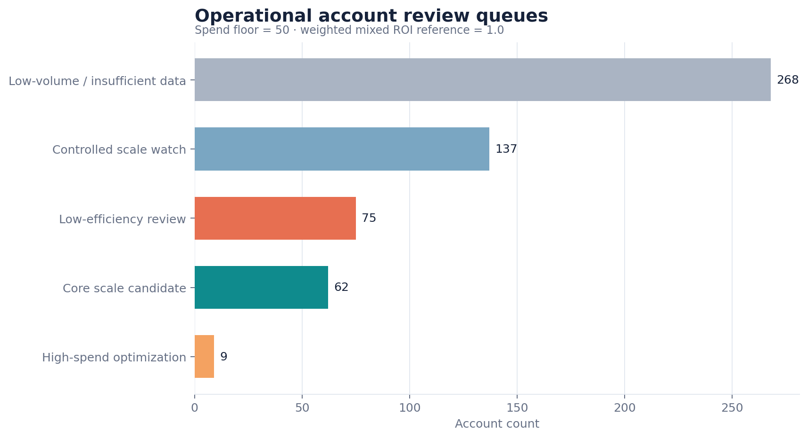

基于深度脱敏的单月账号数据，建立可复现的质量审计、加权指标、预算集中度与五类行动池。
个人分析项目 · 蔡健明
非公司正式上线成果｜匿名替换与同比例缩放｜账号 × 月粒度｜不作因果解释
551 个账号中，消耗 ≥ 50 的 283 个账号几乎覆盖全部预算；按账号数向下取整的 Top 10%（55 个）贡献 64.74% 消耗。运营资源应优先进入头部账号，而不是平均分配。
ROI=1 只表示 24H 混合变现覆盖投放消耗，不等于公司利润。
数据只有 2026-07 单月，不能生成趋势、归因、LTV 或策略增益结论。
| 优先级 | 对象 | 先做什么 | 验证信号 |
|---|---|---|---|
| P0 | 9 个高消耗低回收账号 | 配置与链路排查、限额 | 观察窗内边际 ROI 与消耗节奏 |
| P1 | 62 个高消耗达标账号 | 分批小幅扩量 | 增量消耗是否保持回收 |
| P2 | 137 个低消耗达标账号 | 小步补量 | 跨过样本门槛后的稳定性 |

图 1｜品牌消耗与加权 24H 混合 ROI。比率均由品牌基础量汇总后重算。

图 2｜账号按消耗降序后的累计贡献。Top 10% 按 floor(551 × 10%) = 55 计算。
集中度本身不是问题，但它放大了少数账号配置、素材衰退或承接异常对整体结果的影响。
把 268 个低量账号移出稳定性判断，不会丢失主要预算视角，能显著减少噪声。
| 频率 | 对象 | 监控项 | 触发动作 |
|---|---|---|---|
| 每日 | 高消耗账号 | 消耗节奏、24H 回收、异常断崖 | 配置核查、限额、补素材 |
| 每 2–3 日 | 扩量候选 | 增量消耗与边际 ROI | 继续、回撤或停止扩量 |
| 每周 | 低量池 | 跨门槛数量与样本完整性 | 补量、保留测试或归档 |

图 3｜消耗门槛 50；有效账号消耗 P75=735.80；ROI 参考线 1.0。
| 行动池 | 账号数 | 动作 | 必须说明的边界 |
|---|---|---|---|
| 核心扩量候选 | 62 | 小幅提额，分批观察 | 达标不等于增量仍达标 |
| 高消耗重点优化 | 9 | 优先排查，必要时降额 | 先排除数据/配置异常 |
| 小步扩量观察 | 137 | 补量验证稳定性 | 低消耗 ROI 波动可能较大 |
| 低效清理候选 | 75 | 复核后降级或暂停 | 不应机械批量清理 |
| 数据不足/低量池 | 268 | 补样本或保留测试 | 不得直接判定好坏 |
有效样本中，CTR、CPC、播放率与 ROI 的 Spearman 相关绝对值均低于 0.04；重算播放成本与 ROI 为 -0.128。
这说明单一前链路指标不够解释回收，只能用于生成后续排查假设。
日级消耗与回收、素材 ID、计划/版位/人群、预算调整记录、异常事件与长周期回收。先定义观察窗，再评估边际效果。
2026-07 单月；账号 × 月；551 行、22 字段、8 品牌。无缺失、重复键、负值或播放/点击超过展示。
CTR=Σ点击/Σ展示；ROI=Σ混合变现/Σ消耗；禁止平均账号级比率。
源字段在 534 个有消耗账号中匹配 播放/消耗；分析统一重算 消耗/播放。
消耗门槛 50；有效账号内消耗 P75=735.80；ROI 参考线 1.0；形成五类互斥、完备标签。
Python、MySQL、Notebook、Excel、React 与 Power BI 构建包共享字段与公式，回执校验品牌、分层和公开字段。
匿名替换与同比例缩放；金额不代表真实经营规模；相关性不代表因果；未验证任何策略收益。
| 资产 | 作用 | 检查证据 |
|---|---|---|
scripts/run_pipeline.py | 一次生成 CSV / JSON / PNG | outputs/pipeline_receipt.json |
tests/ | 数据契约与业务逻辑测试 | 完整单元测试输出 |
docs/data_dictionary.xlsx | 字段、口径、质量与行动规则 | 五表渲染与公式扫描 |
web/ | 静态交互看板 | 桌面/筛选/移动端视觉 QA |
本项目最有价值的不是“找到一个万能指标”，而是把口径错误、预算集中度、样本噪声和行动优先级放进同一套可复查流程。真正上线前仍需日级数据与受控验证。